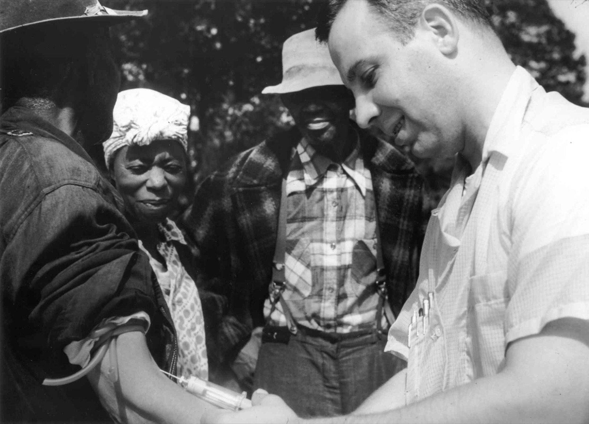
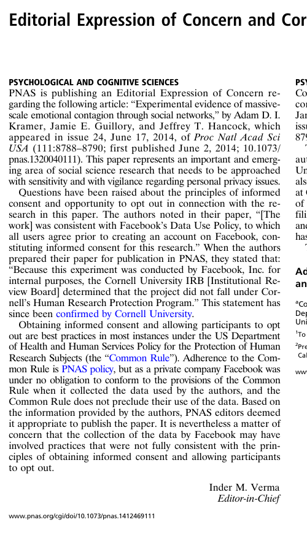
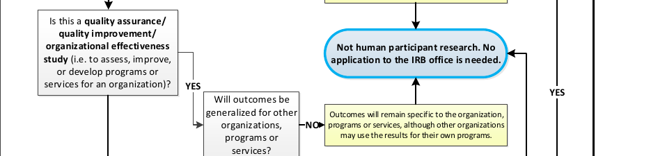
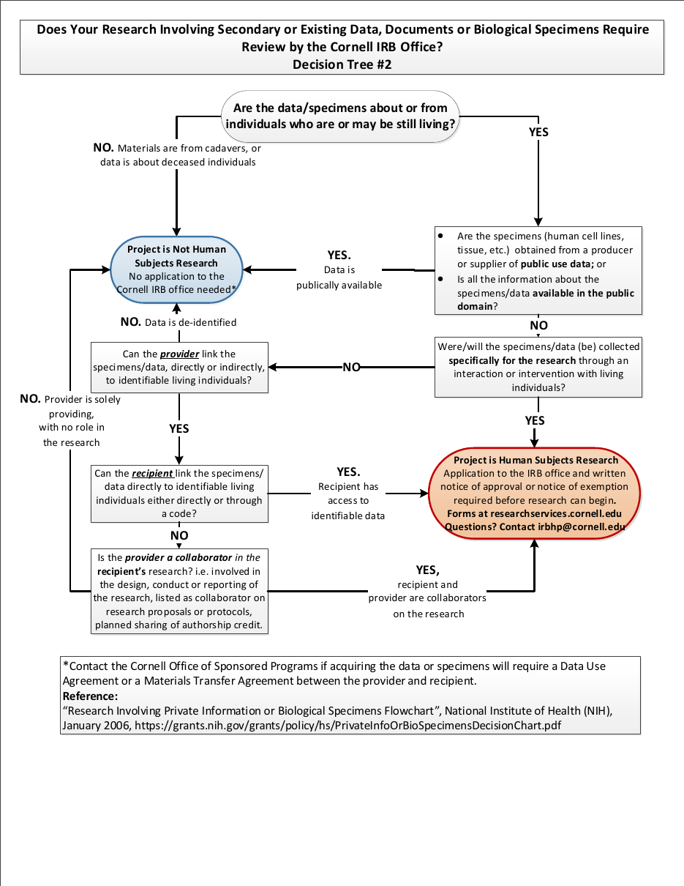
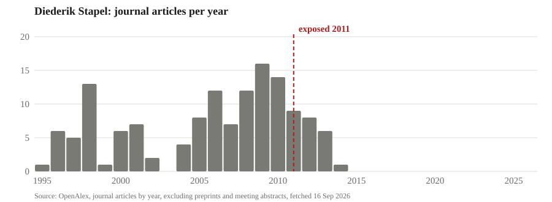
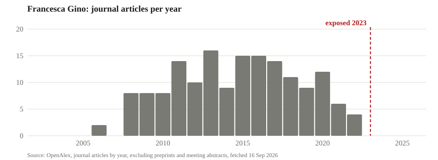
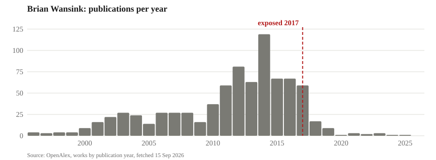
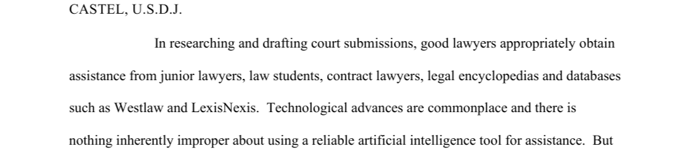

AEM 6991
MPS Capstone Project I
Prof. Ariel Ortiz-Bobea
4 · Ethical and legal obligations
Wednesday, September 16, 2026

Motivation
- Our focus so far: research question, data, and methods.
- Critical aspects of your research also include:
- Ethical considerations: related to your study subjects, and the consumer of your research.
- Legal obligations: contracts, licence and regulations that govern what you can do with the data.
- You operate within pre-existing rules and norms; critical to understand them to avoid major issues.
Legal and ethical are different tests
- Legal is a floor set by somebody else: a regulation, a contract, a licence.
- Ethical is a judgement about people who cannot make it for you.
- The two come apart in both directions:
- The Tuskegee study ran for forty years and nobody was ever prosecuted.
- The Facebook experiment broke no law and drew an expression of concern.
- Reporting one regression out of three breaks no law and has ended careers.
- Scraping a public website is rarely a crime and frequently a breach.
- The National Academies tell institutions to go beyond simple compliance.
1. Human subjects and the IRB
The Nuremberg Code
The defendants in the dock at the Doctors’ Trial, Nuremberg, 1946 to 1947. US Army photograph via USHMM, public domain.
- From 1942, SS and Luftwaffe doctors ran experiments on concentration-camp prisoners at Dachau, Ravensbrück and Auschwitz: altitude, freezing, infected wounds, twins.
- Hundreds died or were harmed, and nobody asked the prisoners or told them what was being done.
- In December 1946 a US military tribunal at Nuremberg put 23 doctors and administrators on trial, convicted sixteen and hanged seven.
- In August 1947 the judges wrote ten rules for research on people into their judgment, and those rules are the Nuremberg Code.
- Rule one: “The voluntary consent of the human subject is absolutely essential.”
- Never adopted in full as law by any country, but absorbed into the Declaration of Helsinki in 1964 and into US consent rules.
The Tuskegee syphilis study

A doctor draws blood from a participant. National Archives, undated, public domain.
- From 1932 to 1972 the US Public Health Service followed 600 Black men in Macon County, Alabama: 399 with syphilis and 201 without.
- The men were told they had “bad blood”, were given free meals, transport and burial insurance, and were never told the diagnosis.
- Penicillin became the standard treatment in the 1940s, and the men were not treated and were kept from treatment.
- By one count, 128 of them died of syphilis or its complications, 40 wives were infected and 19 children were born with congenital syphilis.
- The study ended in 1972 after a Public Health Service employee gave the documents to the Associated Press, and nobody was ever prosecuted.
The Belmont Report
- The National Research Act of 1974 created a national commission on research ethics and wrote the Institutional Review Board into law.
- The commission’s Belmont Report of 1979 set out three principles, each with a practice:
- Respect for persons, applied as informed consent.
- Beneficence, applied as weighing risks against benefits and minimising harm.
- Justice, applied as choosing participants fairly, so the burden does not fall on the disadvantaged.
- The report names Tuskegee as the case where justice failed.
- An IRB applies the three principles before a study starts, and every university taking federal research money has one.
- No law requires a firm to apply the three principles to research it pays for itself: the federal rule reaches only federally funded or FDA-regulated research.
- What reaches the firm instead is privacy law, its own contracts, journals and the press, and none of them needs a board to act.
The Belmont Report, April 18, 1979 · Public Law 93-348 (1974) · 45 CFR 46.107
The Facebook experiment of 2014
- For one week in January 2012, Facebook changed the News Feeds of 689,003 users, removing some positive posts for one group and some negative posts for another.
- It measured whether the users’ own posts turned more positive or negative, and they did, by about a tenth of a percentage point.
- Consent, in the paper’s words: the Data Use Policy “to which all users agree prior to creating an account on Facebook”.
- Two authors were at Cornell, and Cornell’s IRB ruled that they only saw results and were not engaged in human research.
- PNAS published it in June 2014 and printed an expression of concern in July.
- The concern: a private company is under no obligation to follow the federal rule, so the paper stands, but the study may have fallen short of informed consent and the chance to opt out.
- Facebook’s answer in October 2014 was an internal review panel and a research website, not an IRB.

PNAS, Editorial Expression of Concern, July 22, 2014.
What is different between the Facebook experiment and an ordinary A/B test?
- Facebook runs tests on its feed every day, and nobody calls them research.
- The 2014 study was designed as a study, run by scientists, and published in a journal.
- Both change what people see without telling them.
Two questions decide whether the IRB applies
- Is it research: a systematic investigation designed to produce generalisable knowledge?
- Are there human participants: you interact with people, or you hold identifiable private information about them?
- Examples that count:
- A survey, an interview or an experiment you run yourself.
- Scraped posts or reviews where individuals are identifiable.
- Purchased consumer records with names or addresses.
- Examples that do not:
- Firm financials, prices, trade flows or weather.
- Foot-traffic data that arrives aggregated and de-identified.
- Both answers have to be yes, and many projects in this room answer no to the second.
- Identifiable rows count even if you never meet anybody.
Class projects and one-organisation studies

- The tree’s first question is whether the sole intent of a class project is to meet the course requirement, and a capstone whose results leave the course is research.
- The branch above is quality improvement: a study whose outcomes stay with one organisation is not human participant research, and that is last week’s private value.
- Written to say something about people in general, the same project is research, and the choice is made before the data is collected.
- When in doubt you ask irbhp@cornell.edu, because you do not make the call.
Existing data has its own tree

- Page two of the same document, for data somebody else collected.
- Are the rows about people who may still be living?
- Is the file publicly available?
- Can you link a row to a living person, directly or through a code?
- If you cannot, and the provider is not your collaborator, it is not human participant research.
- What the vendor calls the file is not one of the questions.
Cornell IRB office, decision tree 2, research involving secondary or existing data
Removing the names is not de-identification
- ZIP code, birth date and sex together identify 87 percent of Americans uniquely.
- In 1997 a graduate student, Latanya Sweeney, joined a “de-identified” hospital file to the voter roll on those three fields and mailed the governor of Massachusetts his own records.
- Netflix released anonymised movie ratings and two researchers matched them to named IMDb reviewers.
- New York released taxi trips with hashed medallion numbers and the hashes were reversed in hours.
- Direct identifiers are the easy part and quasi-identifiers are the file.
Which of these needs an application?
- An online experiment on a nutrition label with three hundred paid participants, results to your proposal.
- Foot-traffic data from Dewey, aggregated and de-identified before you see it.
- Glassdoor reviews scraped with usernames, to say something about employers in general.
- Firm financials from Compustat.
- A vendor’s consumer file sold as de-identified, with ZIP code, birth year and sex on every row.
Three levels of review measured in weeks
- An exemption takes three to four weeks from start to finish at Cornell.
- Expedited review takes four to six.
- The full board takes four to eight and meets on the first Friday of the month.
- You do not decide that you are exempt: the IRB issues that determination.
- A student protocol needs a faculty advisor who answers for it, and in this course that is me.
Cornell IRB, the life cycle of an IRB protocol · IRB FAQs · PI eligibility
CITI training for projects with human participants
- Every person named on a protocol completes CITI human-participants training, exempt protocols included.
- The IRB issues nothing until the last name on the protocol has finished.
- The course takes two to four hours online, and the certificate lasts five years.
- If your project involves human participants, every member’s certificate goes on Canvas before meeting 6, Wednesday September 30.
- If it does not, you do it the week the plan changes, and the credential is worth having for the research you will run inside a firm.
Cornell IRB training · IRB news, October 2022: training required for exempt research
2. Ethical research practices
The case of Diederik Stapel
- A social psychologist at Tilburg who, for years, invented the data behind his own papers and his students’ dissertations.
- Three junior researchers in his department noticed the data were too clean and reported him in August 2011.
- The university’s inquiry found fraud in 55 publications and parts of 10 doctoral dissertations, and Retraction Watch counts 58 retractions.
- He was suspended, then dismissed, and gave back his doctorate.

Levelt, Noort and Drenth committees (2012), Flawed Science · Retraction Watch leaderboard · OpenAlex
Three words cover research misconduct
- Fabrication is making up data or results.
- Falsification is changing or omitting data or results so that the record misrepresents the research.
- Plagiarism is presenting somebody else’s ideas, processes, results or words as your own.
- A finding requires a significant departure from accepted practice, done intentionally, knowingly or recklessly.
- Honest error and differences of opinion are not misconduct.
- A citation that does not exist is a fabrication, whoever or whatever produced it.
42 CFR Part 93, the federal definition of research misconduct and the requirements for a finding
Cornell’s Code of Academic Integrity
- Every Cornell student is bound by the Code, and a new version took effect on August 24, 2026.
- Its principle: “Absolute integrity is expected of every Cornell student in all academic undertakings.”
- Submitting work for credit says it is your own and that all outside assistance is acknowledged.
- Violations it names:
- Knowingly representing the work of others as one’s own.
- Unauthorized assistance: any aid not explicitly permitted by the instructor, including “by artificial intelligence”.
- “Citing fabricated or non-existent sources, including false citations generated by artificial intelligence.”
- Fabricating data, and misrepresenting one’s academic accomplishments.
- The instructor hears a case first, the college’s board hears appeals, and penalties run from a failing grade to expulsion.
- This course’s written variance, in the syllabus: AI is permitted and disclosed, and a fabricated citation is still a fabrication.
The case of Francesca Gino
- A Harvard Business School professor whose work on honesty and creativity was among the most cited in the field.
- In June 2023 three bloggers showed, from metadata inside an Excel file, that rows had been moved between conditions in one study, and raised the same alarm on three more papers.
- Harvard’s investigation found multiple instances of research misconduct and put her on unpaid leave, and she sued Harvard and the bloggers for 25 million dollars.
- The defamation claims were dismissed in 2024, and Harvard revoked her tenure in May 2025, a first in decades.

Detrimental practices that fall short of misconduct
- The data are real and the search is undisclosed, so the federal definition does not reach them.
- The line is intent: omit results knowingly so that the record misrepresents the research and it is falsification.
- p-hacking: trying specifications, samples or measures until a result clears the line.
- HARKing: presenting a result found after the fact as the hypothesis you started with.
- Selective reporting: publishing the studies and measures that worked and dropping the rest.
- Undisclosed data cleaning: dropping outliers or rows without a stated rule, always in the same direction.
- Not keeping the data and code, so nobody can check the result, one of Cornell’s four findings against Wansink.
- Gift, ghost and coerced authorship, and leaving out people who earned it.
- In a 2012 survey of 2,155 psychologists, 46 percent admitted selective reporting and 27 percent admitted HARKing.
- The National Academies call the family detrimental research practices, and say the damage might surpass misconduct’s.
The case of Brian Wansink
- Cornell’s Food and Brand Lab, in this school, published hundreds of papers on eating behaviour.
- In November 2016 he wrote a blog post describing how a student re-analysed a null result until four papers came out of it.
- Three researchers found about 150 statistical inconsistencies in those four papers from the reported numbers alone.
- In September 2018 the JAMA journals retracted six papers after Cornell told them it could not vouch for the results.
- Cornell’s committee found academic misconduct: misreporting of data, problematic statistics, failure to keep records and inappropriate authorship.
- He resigned, with eighteen retractions.

How misconduct gets caught
| Case | What was wrong | Who caught it and how | The price |
|---|---|---|---|
| Stapel, 2011 | Invented the data for dozens of papers | Three junior researchers in his own department reported him | His chair, his doctorate and 58 papers |
| LaCour, 2015 | A survey that was never run | Two graduate students tried to replicate it and found the survey firm had no record | The paper and a job offer |
| Wansink, 2017 | Null results re-analysed until they were papers | Three outside researchers found 150 inconsistencies in the reported statistics | His position and 18 papers |
| The 2012 honesty-pledge paper, 2021 | Fabricated rows in an insurance field experiment | Three bloggers found two fonts in one column | The paper |
| Gino, 2023 | Altered rows in four papers | The same bloggers read the metadata inside an Excel file | Tenure at Harvard, revoked in 2025 |
- Caught by outsiders or juniors, from the file or the reported numbers, after publication.
- So keep the raw file, one path from raw to result, and a note saying where the raw came from.
Sources for each row are in the companion page’s table of cases
“It was the AI’s fault” is not an excuse
- In 2023 two New York lawyers filed a brief citing six court opinions that did not exist.
- An AI assistant, ChatGPT, had invented them, with plausible names, courts and citations.
- Judge Castel fined the lawyers and their firm 5,000 dollars, and made them write to every judge falsely named as the author of an opinion.
- The judge wrote that “there is nothing inherently improper about using a reliable artificial intelligence tool for assistance”, so the fault was not checking.
- The syllabus says the same thing: undisclosed AI use and a fabricated citation are both integrity violations.

Is reporting one specification out of three misconduct?
- A team runs three specifications and reports the one that worked.
- Is it fabrication, falsification, plagiarism or none of them, and what is the honest version?
3. Data-use agreements and licences
The Cambridge Analytica case
- Cambridge Analytica was a British political consulting firm that sold voter targeting by personality and worked for the 2016 Trump campaign.
- In 2014 a Cambridge University psychologist’s quiz app, presented as research, was installed by about 270,000 people and, as Facebook then allowed, took their friends’ data too: up to 87 million profiles.
- He passed the data to Cambridge Analytica against Facebook’s platform policy, and the firm built voter profiles from it.
- Facebook learned of the transfer in 2015, asked for the data to be deleted and took certificates that it had been, and it had not.
- In March 2018 a former employee, Christopher Wylie, told the Observer and the New York Times.
- The price: a 500,000 pound UK fine, the legal maximum; a 5 billion dollar FTC penalty; the chief executive before Congress; the firm closed within two months.
- The quiz-takers agreed to something, and their friends agreed to nothing.
Christopher Wylie at the protest in Parliament Square, London, March 29, 2018. Photo John Lubbock, CC BY-SA 4.0.
When data is used beyond what was agreed
| Case | What was agreed | What happened | The price |
|---|---|---|---|
| Havasupai, 1990 to 2010 | Blood given by tribe members for diabetes research | Used in studies of schizophrenia, migration and inbreeding, found out at a dissertation defence in 2003 | The Board of Regents settled in 2010: 700,000 dollars, the samples returned, an apology |
| Royal Free and DeepMind, 2015 to 2017 | Nothing that told the patients | A London hospital trust gave Google DeepMind the records of 1.6 million patients to build an app | The UK regulator ruled in 2017 that the trust had broken data protection law |
| AOL, 2006 | No agreement at all | Twenty million queries from 658,000 users posted for researchers, and the New York Times identified user 4417749 by name | The chief technology officer resigned and two employees were fired |
- The harm came from use beyond the stated purpose, and a data-use agreement fixes the purpose, the recipients and the exit.
A data-use agreement is a contract
- It is not an ethics review and it does not replace one.
- The university signs it, through the Office of Sponsored Programs, not you.
- Expect legal review on both sides and expect months.
- It binds Cornell, and it binds you through Cornell, so a breach is the university’s problem and then yours.
- OSP is asked at osp_dua@cornell.edu, and whether it will sign for a class project is a question to ask in October, not assume.
Cornell Research Services, exchange commercially unavailable or restricted data
What the clauses do
- Publication review is normal and a veto is not, so settle it before anybody signs.
- Destruction at the end, no redistribution, and no attempt to re-identify are standard.
- The agreement names who may touch the file and where it may live.
- A teammate’s employer may offer data under a non-disclosure agreement, and an NDA that covers the result blocks the presentation in this room in December.
- Settle who owns the output before the file arrives.
- A conflict of interest is disclosed rather than confessed: one sentence that tells the reader how to weight your claim.
Licences on data Cornell already holds
- A licence is a contract too, and the university accepted it so that you can have an account.
- Most of what the library pays for, WRDS and Compustat included, is licensed for academic non-commercial use.
- A project a firm would pay for cannot be built on a licence that forbids commercial use.
- The terms decide what you may publish and whether you may pass the rows on, so read them before the file is on your laptop.
- A restriction on the rows is not a restriction on the result: aggregates, estimates and figures are yours to show.
Terms of service are a contract
- Terms of service are a contract you accepted by clicking.
- Scraping is rarely a crime and frequently a breach.
- An appeals court let a scraper keep taking public LinkedIn pages, finding a serious question whether that is a computer crime at all.
- The district court then found the same scraper had breached the user agreement, and the case ended in a 500,000 dollar judgment and an order to delete the data.
- In 2021 Facebook shut down NYU researchers’ accounts over a browser extension that collected political ads with the users’ consent, citing its terms of service.
- Prefer the download, then the API, then nothing.
Where the file may live
- Cornell classifies data as low, moderate or high risk.
- Student records and anything under FERPA sit at moderate risk, and proprietary and licensed data are covered by the same rule.
- Identifiers paired with a name, health records and financial account data sit at high risk.
- Cornell’s rule: do not enter data at moderate risk or above into a publicly available generative AI platform.
- The approved tools are listed at the AI Innovation Hub, and next week’s session runs on that list.
- Collect only what you need, because a column you did not need is a risk you did not need.
AEM 6991